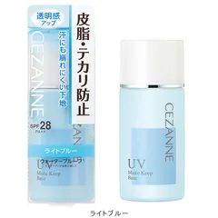

まず1本目（鼻とおでこが光る人）

セザンヌ
皮脂テカリ防止下地 ライトブルー
30mL・SPF28 PA++・皮脂を吸う粉入り・ウォータープルーフ
¥660税込・出典掲載価格
書き込みの声
- 選ぶ条件：薄く塗っているのに、1時間ほどで鼻とおでこだけが光る人。まず660円のこの1本から
- 皮脂が上がってきたときに、ファンデの下で受ける層がひとつ増えます。間に紙を1枚はさむ役です
- 塗る量はパール1粒ぶん。鼻とおでこだけ先にのばして、頬は手に残った分でじゅうぶんです。化粧水と乳液のあと、ファンデの前に塗ります
気になる声気になる点：光るまでの時間が延びるだけで、昼にゼロになるわけではありません。青みの色は頬の赤みが気になる人向けで、顔色をそろえたい人はベージュ寄りを選んでください
販売価格・容量・送料はリンク先でご確認ください